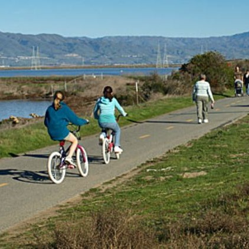
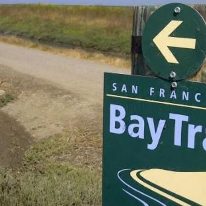
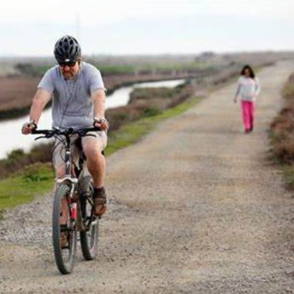

Oakland to SF on June 19th
The Bay Trail Century is a 100 mile ride from Oakland's Lake Merritt to Downtown SF. Starting in the early morning, we will bike south along the eastern shore of the San Francisco Bay until San Jose. Then we will bike north along the western shore to San Francisco. This route has bart station bail outs every 5-10 miles for the first 60 miles, so you don't even need to ride the whole thing if you just want to join for the beginning! We will have set re-group points every 5-10 miles as well so that people can ride at their own pace. There will be a lunch break somewhere near San Jose.
Mostly paved
Some dirt
Light gravel
